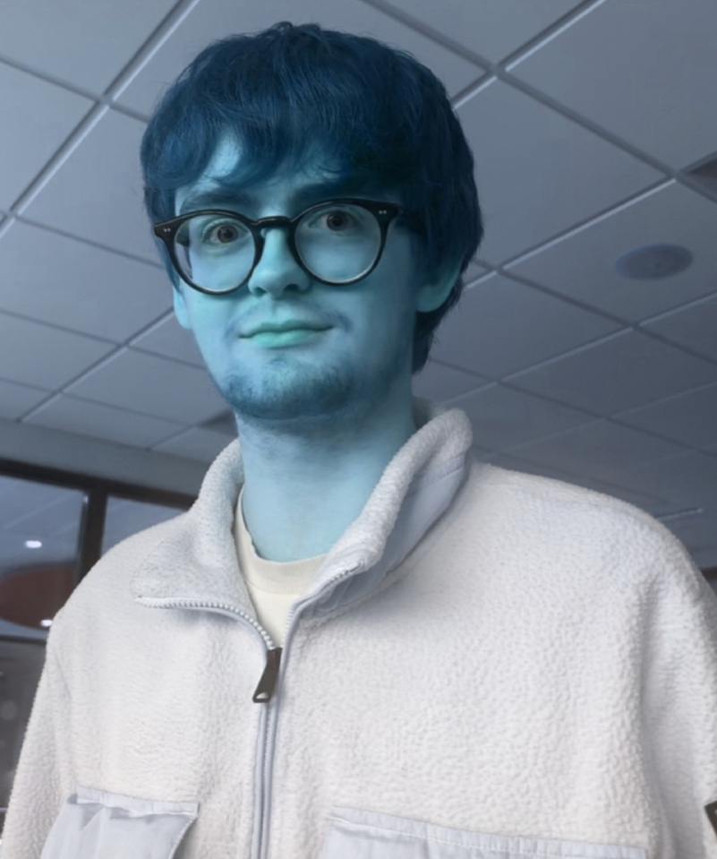

Blue Daniel
"i am going to blue you now" - Blue Daniel
Blue Daniel is a chromatic variant of Daniel recognised for his distinct blue appearance, emotionally steady personality, and quietly introspective nature. He is widely regarded as one of the calmest Daniels across all known timelines, often serving as a grounding presence during chaotic events and multiversal mishaps. Blue Daniel’s defining traits include a muted blue hoodie, cobalt-coloured clothing, and an overall cool-toned aesthetic that sets him apart from his counterparts. Many describe him as embodying “the gentle melancholy of a cloudy afternoon,” a sentiment that has become closely tied to his portrayal. Blue Daniel’s origin is loosely traced to Earth-B7, a parallel universe characterised by colder climates, darker skies, and a general sense of subdued emotion. This environment is said to have shaped him into a quietly reflective figure with a dry, understated sense of humour. Unlike more energetic or volatile Daniel variants, Blue Daniel rarely raises his voice and speaks with deliberate calmness, even in stressful circumstances. His presence is often accompanied by an unintentional calming effect on others, sometimes interpreted as an “emotional dampening field.” This has led to the fan-coined term The Blue Aura—a faint atmospheric stillness that seems to follow him wherever he goes. Despite his mellow demeanour, Blue Daniel is not apathetic. He is deeply loyal to those he considers friends, responding to conflict with silent determination rather than dramatic confrontation. He displays unusual resistance to cold, rain, and damp conditions—traits that have led some in-lore theorists to suggest he is partially aligned with water-based energy or emotional wavelengths tied to sadness and serenity. His hoodie, consistently depicted as perfectly dry no matter the weather, is one of the more mysterious aspects of his character and has inspired numerous fan interpretations. Blue Daniel’s introduction to the Prime Danielverse is most commonly associated with the “Chromatic Convergence”, a multiversal incident in which several Daniels accidentally crossed timelines. Though the event itself is poorly documented, many accounts describe Blue Daniel as entering the scene quietly, assessing the situation, and then offering a tired-sounding “alright” that somehow diffused rising tension among the other variants. His quiet reasoning and neutral expression have since become iconic elements of his persona. Socially, Blue Daniel is known for his blunt but unintentionally humorous comments. He often delivers simple observations that come across as philosophical, melancholic, or accidentally comedic. His emotional insight, despite his monotone delivery, has earned him a reputation as the “therapist Daniel” among those who consult him for advice. He is rarely seen expressing strong emotion; however, small shifts in tone or posture are widely interpreted by fans as significant. His abilities, while subtle, include heightened emotional perception, resistance to adverse weather, and the aforementioned calming aura. Though he lacks overt powers displayed by more combat-oriented Daniel variants, his emotional steadiness and grounding effect make him surprisingly influential. His quiet presence has ended more arguments than some Daniels’ abilities ever could. Blue Daniel remains one of the most recognisable and beloved Danielverse variants due to his distinctive blue palette, understated personality, and aura of peaceful melancholy. Most depictions show him standing slightly apart from a crowd, hands in his pockets, radiating a soft calmness that contrasts sharply with the more chaotic energies surrounding him. Traits such as his unwavering hoodie dryness, his affinity for gloomy weather, and his subtle but potent emotional clarity continue to make him a fan favourite and an essential part of the expanding Danielverse mythology.
Blue Daniel
Aliases
- Cool Tone Crid
- Daniel, But He’s Feeling a Bit Blue Today
- Damp Danny
- Teary Tint Daniel
- Damp Danny
- Teary Tint Daniel
Occupation
Being blue
Affiliations
Blue gang, Chromatic Cridlands
Hobbies
Being blue, eating blue babies
Allies
- Blue Billy (Best Friend)
- Green Lucas (Friend)
- Red Doodle (Friend)
- Blue Maxfield (Friend)
Enemies
- Black Mark (mortal enemy)
- Red Rhys Preston (Evil Rival)